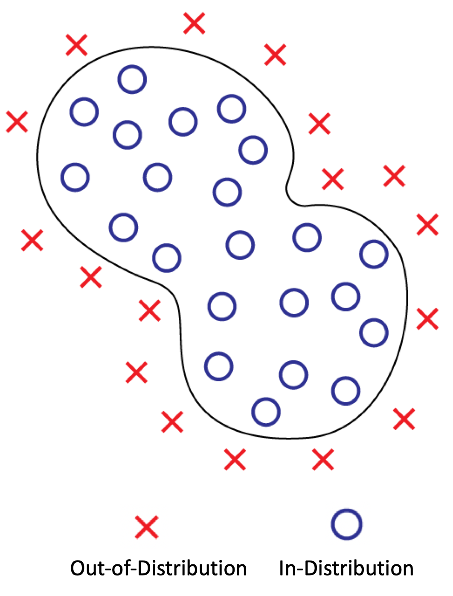
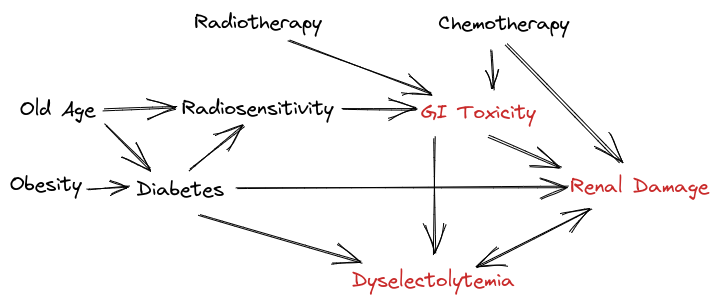

1. Introduction
Causality is a fundamental concept in both science and Artificial Intelligence (AI), providing a structured way to understand and model the relationships between different variables in a system. Traditional machine learning models, despite their impressive success in pattern recognition and predictive tasks, fundamentally rely on statistical associations rather than causal relationships. This distinction is crucial because while correlations can be useful for prediction within an unchanged environment, they fail when faced with interventions, distributional shifts, or tasks that require reasoning beyond the training distribution.
Machine learning models trained on large datasets often assume that the observed data is sampled from a static, independent, and identically distributed (i.i.d.) distribution. However, real-world data is rarely i.i.d.; instead, it is generated through complex processes that involve interactions between underlying causal mechanisms. In practice, machine learning systems deployed in dynamic environments frequently encounter shifts in data distributions, making models prone to failure when they are applied outside of the training domain. This is particularly evident in applications such as healthcare, autonomous driving, and financial modeling, where models must make reliable decisions under changing conditions.
A key limitation of traditional statistical learning approaches is their inability to generalize beyond the observed data distribution. When trained on large datasets, deep neural networks learn intricate mappings between input and output variables, often capturing high-dimensional correlations that work well within the given dataset but fail when tested on out-of-distribution samples. This lack of robustness arises because standard machine learning models do not explicitly learn the underlying causal mechanisms that govern data generation. As a result, even state-of-the-art models struggle with tasks that require understanding counterfactuals, reasoning under interventions, and transferring knowledge to new domains.
Causal reasoning, in contrast, aims to identify the true causal structure that explains the data, rather than merely capturing statistical dependencies. A causal model allows us to answer questions about interventions (What happens if we change variable X?) and counterfactuals (What would have happened if X had been different?). These capabilities are crucial for robust AI systems that need to operate in environments with shifting conditions and for applications that involve decision-making based on interventions rather than passive observation.
Integrating causal representation learning into machine learning provides several key advantages:
- 1. Robust Generalization: By learning the causal mechanisms rather than spurious correlations, models can better adapt to distribution shifts and unseen conditions.
- 2. Interventional Understanding: Causal models enable reasoning about the effects of actions, which is critical in domains such as healthcare and policy-making.
- 3. Counterfactual Reasoning: Beyond standard predictions, causal models can answer what-if questions, allowing for improved decision-making and interpretability.
- 4. Transfer Learning and Adaptability: Causal representations facilitate knowledge transfer between related but different tasks by identifying reusable causal structures.
- 5. Improved Interpretability: Unlike black-box neural networks, causal models provide more explainable and transparent reasoning processes, which is essential for trustworthy AI applications.
However, learning causal representations from raw data is a challenging problem. Unlike structured datasets used in traditional causal inference, most real-world data does not come with explicitly labeled causal relationships. Instead, causal variables are often latent and must be inferred from observed correlations, making causal discovery a difficult yet essential step. Moreover, integrating causal reasoning into deep learning architectures requires a shift from purely associative learning towards learning structured representations that align with the principles of causality.
In this blog post, we explore the field of causal representation learning, its fundamental principles, and its implications for machine learning. We will discuss how causal models differ from statistical models, how causal representations can be learned from data, and why incorporating causality into machine learning is essential for developing more robust, interpretable, and generalizable AI systems.
2. Levels of Causal Modeling
Understanding causality requires considering different levels of modeling, each providing a different degree of insight and predictive capability. At the most fundamental level, physical systems can be described by mechanistic models, such as differential equations, that fully capture the underlying processes governing the evolution of variables over time. These models allow precise predictions, reasoning about interventions, and the ability to infer causal structures directly from physical principles. However, they often require domain expertise and are not always feasible to construct from observational data alone.
Moving one level up, Structural Causal Models (SCMs) provide an abstraction of mechanistic models by representing relationships between variables through a set of structural equations. These equations define how each variable depends on its causes, incorporating both deterministic mechanisms and independent noise terms. SCMs enable reasoning about interventions by modifying specific equations while keeping others unchanged, making them a powerful tool for understanding causality in data-driven settings.
Further abstraction leads to causal graphical models, which encode causal relationships using Directed Acyclic Graphs (DAGs). These models specify the conditional independence structure of variables and allow for interventions and counterfactual reasoning, though they typically require additional assumptions to be fully identifiable from observational data. Unlike purely statistical models, causal graphical models explicitly distinguish between correlation and causation, enabling robust predictions under distribution shifts.
At the highest level of abstraction, statistical models describe relationships between variables purely through probabilistic dependencies, without explicitly modeling causal mechanisms. While these models can achieve high predictive accuracy under i.i.d. conditions, they fail to generalize when the underlying distribution changes or when reasoning about interventions is required. As a result, purely statistical approaches are insufficient for tasks that require causal understanding, such as policy evaluation, decision-making, and out-of-distribution generalization.
This hierarchy of causal modeling highlights the trade-offs between expressiveness, interpretability, and learnability. While mechanistic models provide the most detailed and accurate descriptions, they are often infeasible to construct purely from data. Causal graphical models and SCMs offer a balance between expressiveness and practicality, enabling causal reasoning with data-driven approaches. In contrast, statistical models, though powerful in pattern recognition, lack the ability to make robust predictions under interventions or domain shifts. Understanding these levels of causal modeling is crucial for developing AI systems that go beyond correlation-based learning to achieve deeper reasoning and generalization capabilities.
3. The Common Cause Principle
Let's start with a motivational example. Suppose Alice is searching online for a laptop rucksack (a backpack with a padded compartment for a laptop). The web shop’s recommendation system suggests that she should buy a laptop to go along with the rucksack. This seems odd because she probably already owns a laptop—otherwise, she wouldn’t be looking for the rucksack in the first place.
This situation highlights an important idea: correlation does not imply causation. The system has observed that people who buy laptop rucksacks often also buy laptops, but it has not properly accounted for the underlying cause—many users already own a laptop before searching for a rucksack.
The Common Cause Principle states that if two variables, X and Y, are statistically dependent, then there must exist a third variable, Z, that causally influences both of them. This variable Z explains the entire dependence between X and Y, meaning that once we control for Z, X and Y become statistically independent.

To illustrate, consider the relationship between the number of storks (X) and the human birth rate (Y). There are three possible causal explanations:
- Direct causation (X → Y): If storks actually bring babies, then an increase in storks leads to an increase in the birth rate.
- Reverse causation (X ← Y): If babies somehow attract storks, then the birth rate influences the number of storks.
- Common cause (X ← Z → Y): If an external factor, such as economic development (Z), influences both the number of storks and the birth rate, then Z explains the observed correlation.
Without additional assumptions, we cannot distinguish these three cases using observational data. The class of observational distributions over X and Y that can be realized by these models is the same in all three cases. A causal model thus provides genuinely more information than a purely statistical one.
4. The Importance of Disentangled and Independent Causal Mechanisms
A fundamental principle of causal reasoning is the Independent Causal Mechanisms (ICM), which states that the causal generative process of a system is composed of autonomous mechanisms that do not influence one another. This independence is crucial because it allows for modularity, meaning that changes to one causal mechanism (e.g., an intervention) do not require re-learning the entire system but only the affected module. In contrast, statistical learning models tend to entangle dependencies, making them fragile when faced with changes in data distributions.
To clarify the concept, let's take as an example a person's age and sex. Age is a continuous variable that naturally increases over time, while sex is a categorical trait determined at birth. These two variables are causally independent, meaning that the mechanism governing one does not influence the mechanism governing the other.
For instance, consider a medical database where both age and sex are recorded. If we were to intervene and artificially change a person's recorded age—perhaps lowering it in the system—this would have no effect on their biological sex. Likewise, if we were to modify the recorded sex, their actual age would remain unchanged. This independence reflects a fundamental property of the world: males and females exist across all ages, and the process of aging occurs regardless of whether someone is male or female.
This independence also implies that we can obtain a disentangled representation of these two variables. In other words, because we can manipulate one without altering the other, we can represent them separately in a way that preserves their true causal structure. If such disentanglement were not possible—if, for example, changing a person’s sex also altered their age—it would suggest an underlying dependency between the two, making it difficult to study or model them separately. However, because age and sex are governed by independent causal mechanisms, their representations remain distinct, allowing us to analyze them separately without introducing unintended confounding effects. This autonomy of mechanisms is a key aspect of the Independent Causal Mechanisms (ICM) principle, ensuring that different causal factors remain modular and unaffected by changes to one another.
Similarly, in economics, market trends, consumer behavior, inflation rates, and government policies all impact economic indicators like GDP or employment rates. If a learned representation entangles these factors—such that inflation rates and consumer demand are mixed into the same latent space—it becomes challenging to isolate the direct impact of inflation from shifts in consumer preferences. This makes causal reasoning about policy interventions difficult. For example, if a government implements a tax reduction policy, a disentangled representation would allow a model to predict how much of the economic change stems from taxation adjustments versus broader market fluctuations. Without disentanglement, the effect of tax policies could be conflated with external economic shocks, leading to misleading conclusions.
In practice, disentangled representations can be achieved through structured models such as structural equation models (SEMs), variational autoencoders (VAEs) with disentanglement constraints, or self-supervised learning techniques that encourage factor separation. These models enforce a structured decomposition of causal factors, ensuring that learned representations align with the principle of independent causal mechanisms. By explicitly separating latent factors, disentangled representations provide a foundation for robust intervention modeling, counterfactual reasoning, and generalization to new environments.
Furthermore, the benefits of disentangled representations extend to decision-making in dynamic environments. In healthcare, a model trained to predict hospital readmission rates should separately encode variables such as patient comorbidities, hospital treatment protocols, and socioeconomic status. If these factors are entangled, policy decisions aimed at improving hospital care could be confounded by socioeconomic effects, leading to ineffective interventions. By contrast, a model with a disentangled structure would allow policymakers to simulate targeted interventions—for example, adjusting hospital staffing ratios while controlling for external socioeconomic factors.
Overall, the need for disentangled representations is fundamental for machine learning systems that aim to reason causally, adapt to new settings, and support decision-making under uncertainty. By structuring data such that independent causal mechanisms remain modular and interpretable, we move closer to AI systems that go beyond correlation-based learning and towards models that can generalize, intervene, and provide actionable insights in complex domains such as healthcare and economics.
Conclusion
In this blog post, we have explored the importance of causal inference in machine learning and how it differs from traditional statistical approaches. We discussed the limitations of relying solely on correlations and the necessity of understanding causal relationships to build robust, generalizable, and interpretable AI systems. By integrating causal representation learning, we can achieve better generalization, interventional understanding, counterfactual reasoning, and transfer learning.
We also delved into different levels of causal modeling, from mechanistic models to structural causal models and causal graphical models, highlighting their respective strengths and trade-offs. The Common Cause Principle and the Independent Causal Mechanisms principle were introduced to emphasize the need for disentangled and independent causal mechanisms in causal reasoning.
Ultimately, incorporating causality into machine learning is essential for developing AI systems that can adapt to changing environments, make reliable decisions under uncertainty, and provide actionable insights across various domains such as healthcare, economics, and policy-making. As the field of causal representation learning continues to evolve, it holds the promise of advancing AI towards more robust and trustworthy applications.